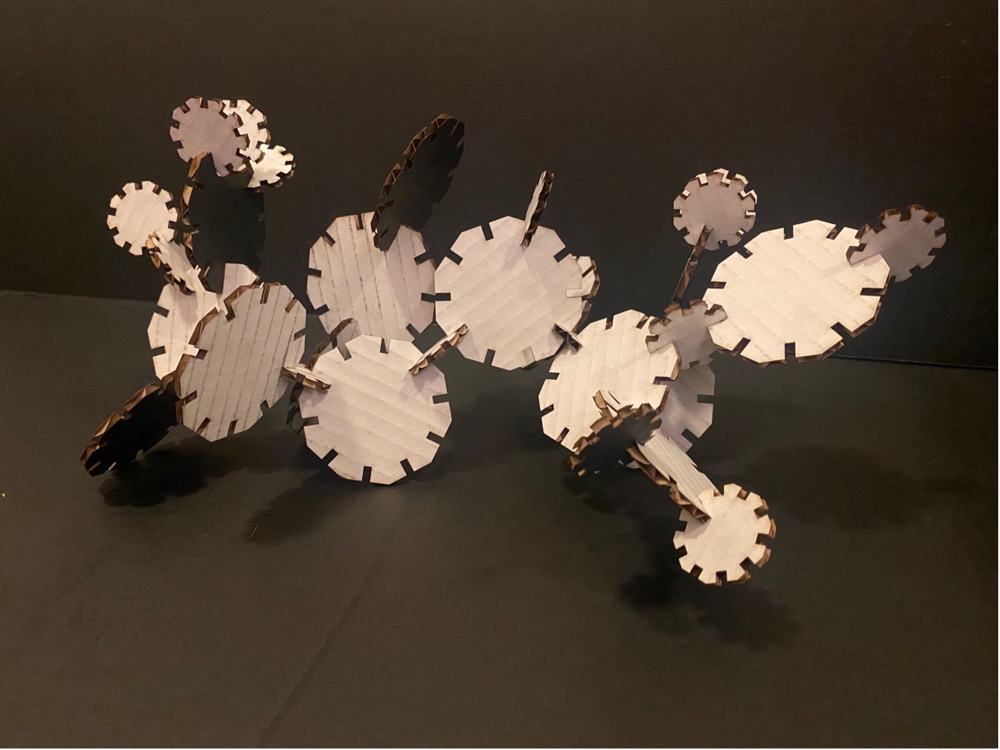

A2: Parametric Modelling with Grasshopper
By Jessica Hord
Documentation
Ideation
Grasshopper was quite a bit of a learning curve. For this assignment, I originally wanted to do a triangle with slots. I worked with Professor Nadya on figuring out the radius, but it was making everything really difficult to try and use the triangle. Below is the math Nadya did on a piece of cardboard in the Mill to try and figure out the radius.
So, I switched to a polygon, followed the class tutorial, Googled, and asked questions of classmates. Thanks to Vanessa for being my Grasshopper tutor and Petrina for the tip on using “region difference”. I used the same Grasshopper file for both of my pieces to show that the file works. The file indicates where changes can be made and where to bake.
Design
Below is the Grasshopper definition for the larger shape. The radius is set to 38.1 mm, which makes the entire shape 76.2 mm (3 inches). You can adjust the number of sides, the number of slots, the depth of the slots, etc. The spot to put in the thickness of your cardboard is under “slots”. It explains to remove .5 from the thickness for a snug fit.
For the second shape, I used a radius of 19.05 mm. I adjusted the “depth of slot” for the new size. There is a note suggesting that you make the slots 1/8 of the entire shape’s size for a snug fit.
I baked one of these at each size and exported to Illustrator so that I could cut at the 8. I made sure that 1 mm = 1 mm for the conversion and checked the size in Illustrator.
Implementation
Once in Illustrator, I copied and pasted the pieces until I had more than 15 of each, changed the color to red, made the stroke .01, and did a test print. The settings were 83% power, 12% speed, and 500 PPI as suggested by the laser cutter interface for cardboard. Just like last time, the thickness is set to 3mm (1 mm less than the cardboard’s thickness) because of the density of cardboard. The test print worked perfectly so I printed out the rest.
Final Pieces
After that, I put it all together (with some help from my cat, Murdoch!


Thank yous!
Professor Nadya, Vanessa, and Petrina for help with Grasshopper.
Bailey for the emotional support and company while laser cutting.
Source Files
Rhino fileGrasshopper definition (set to larger size - 3")
Laser cut AI file